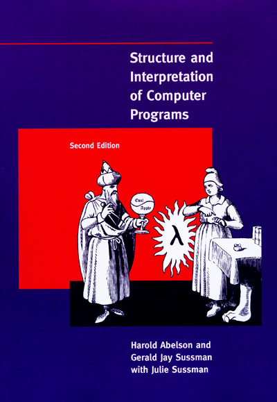

Structure and interpretation of computer programs

Harold Abelson and Gerald Jay Sussman. Structure and Interpretation of Computer Programs. MIT Press. 1985.
A book once described (by me, actually) as “the only computer science book worth reading twice”, and which was the foundational text for teaching programming at MIT for decades.
There are many reasons that this book is so popular and long-lived. It’s resolutely an introductory text, but it treats topics that are uncommon in introductions, and does so to a depth that’s quite astonishing – although it has to be said that the authors avoid the more complex constructions like conditions and the complexities of macros, (They do deal with continuations, however, which are essential for good Scheme programming.)
But what other introduction to programming includes a complete meta-linguistic re-implementation of the language itself? – and in two different styles! It can do this because Scheme is so regular and so simple – homoiconic (one representation for programs and data), (although they don’t use that term).